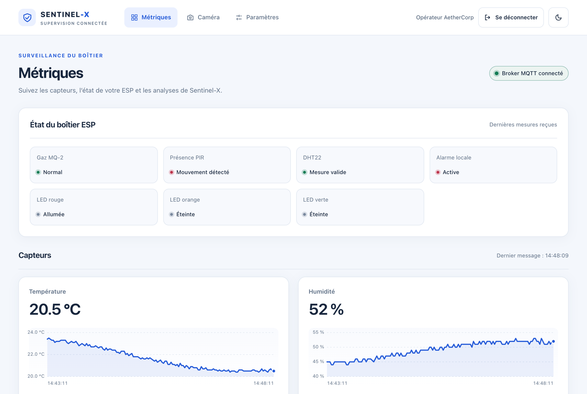
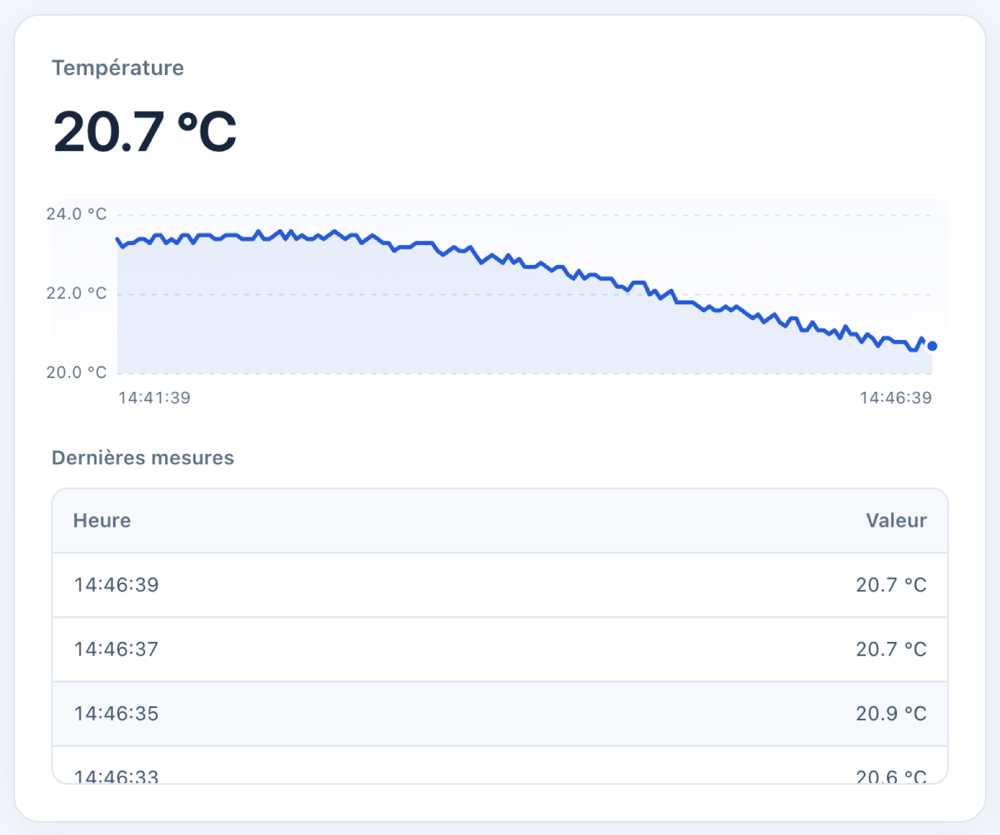

Application React/Vite de supervision : métriques en temps réel, état du boîtier, analyses IA, caméra et reconnaissance faciale, paramètres de notification.
iot-frontend est le dashboard de supervision des opérateurs. Il affiche en temps réel les mesures et l'état du boîtier, les analyses du service IA et la webcam du serveur. Il permet aussi de gérer la reconnaissance faciale et de régler les notifications.
/api/* sur la même origine. Elle ne contacte jamais MQTT, FastAPI ni la caméra directement.L'application suit la même clean architecture que le backend. Les composants React ne connaissent que des ports, c'est-à-dire des interfaces. Les implémentations concrètes sont instanciées une seule fois dans main.tsx et injectées par un contexte React (ServicesContext). Remplacer le transport (REST, SSE) ou l'authentification ne touche donc pas à la présentation.
| Couche | Dossier | Contenu |
|---|---|---|
| Domaine | src/domain | Types et règles pures : fusion et bornage de l'historique (telemetry.ts), fraîcheur de l'état du boîtier (esp-status.ts), priorité réel/simulation des analyses (ai.ts), détections et visages (vision.ts, faces.ts), validation de l'enrôlement (face-enrollment.ts), notifications, session |
| Application | src/application | Ports DeviceApi, AiApi, SettingsApi, LiveFeed, AuthService, ThemeStore ; erreurs (UnauthorizedError) ; cas d'usage startVisionAndWait |
| Infrastructure | src/infrastructure | Client HTTP commun (http-client.ts), adaptateurs HttpDeviceApi, HttpAiApi, HttpSettingsApi, SseLiveFeed (EventSource), BetterAuthService, LocalThemeStore, préparation des photos (face-enrollment-payload.ts) et URL du flux (camera-stream.ts) |
| Présentation | src/presentation | App.tsx, pages (MetricsPage, CameraPage, SettingsPage), composants, hooks (useSession, useDeviceStatus, useLiveData, useNotificationSettings, useRoute, useTheme), styles partagés index.css |
| Composition | src/main.tsx | Instanciation des adaptateurs et rendu de l'application |
Le routage utilise le fragment d'URL (#/metrics, #/camera, #/settings), ce qui fonctionne derrière n'importe quel serveur statique sans règle de réécriture.
| Donnée | Mécanisme | Fréquence |
|---|---|---|
| Session | AuthService.getSession() au démarrage, puis à chaque 401 | à la demande |
| État MQTT et dernière mesure physique | GET /api/status | toutes les 2 s |
| Historique des mesures | GET /api/readings?limit=150 puis événements SSE reading | initial + temps réel |
| Analyses IA | /api/ai/history et /api/ai/latest, puis SSE ai | initial + temps réel |
| Disponibilité IA, webcam, visages | SSE ai-status et GET /api/ai/status | temps réel + toutes les 5 s |
| Détections vision externes | GET /api/vision puis SSE vision | initial + temps réel |
| Vidéo | Balise image sur /api/camera/stream (MJPEG) | flux continu |
/api/stream) transporte les quatre types d'événements.startVisionAndWait envoie start, puis interroge /api/ai/vision/status chaque seconde (20 s maximum) jusqu'à l'état running. Le flux vidéo n'est ouvert qu'à ce moment, avec une URL unique à chaque tentative.
| Écran | Composants | Rôle |
|---|---|---|
| Toutes les pages | Topbar | Navigation, utilisateur connecté, déconnexion, bascule clair/sombre |
| Connexion | LoginForm | E-mail et mot de passe ; messages pour identifiants invalides et blocage temporaire |
| Métriques | StatusIndicator | Pastille verte/rouge/grise de l'état du broker |
EspStatusPanel | Gaz, PIR, DHT, alarme locale et LEDs remontés par le firmware | |
LineChart + tableaux | Valeur courante, graphique temps réel et 20 dernières mesures par capteur | |
AiPanel, VisionCamera | AI ENGINE : anomalie, risque, confiance, raisons, webcam et événements récents | |
| Commande LED | Boutons ON/OFF (nécessitent un firmware MQTT compatible) | |
| Caméra | CameraFeed, VisionControls | Flux vidéo, démarrage/arrêt de la webcam, réessai |
FaceRecognitionPanel | Visages courants, catalogue, rechargement, historique des reconnaissances | |
FaceEnrollmentForm | Ajout d'une personne : nom, 1 à 5 photos, aperçus locaux, bilan photo par photo | |
| Paramètres | SettingsPage | Adresse de réception, activation, types d'alertes, e-mail de test |
localStorage). public/theme-init.js l'applique avant le premier affichage pour éviter un flash. C'est un fichier externe, pour rester compatible avec la CSP.index.css) pour les deux thèmes ; une couleur d'état est toujours accompagnée d'un texte, jamais seule.aria-live pour les messages, animations désactivées si le système le demande.
HttpOnly géré par Better Auth : il n'est pas lisible par le JavaScript de la page.default-src 'self', frame-ancestors 'none'), X-Frame-Options: DENY, X-Content-Type-Options: nosniff et Referrer-Policy: no-referrer.npm run dev # Vite, /api relayé vers http://127.0.0.1:3001
npm test # règles du domaine et adaptateurs (runner natif de Node)
npm run lint # oxlint
npm run build # tsc -b puis vite build vers dist/Production : l'image Docker compile l'application puis la sert avec nginx-unprivileged (utilisateur non-root, port 8080). nginx relaie /api/ vers le backend sur le réseau interne, avec une limite de taille élargie uniquement pour la route d'enrôlement facial.
| Vérification (état du dépôt à la génération) | Résultat |
|---|---|
npm test — domaine, flux SSE, IA, visages, enrôlement, démarrage webcam | 39/39 réussis |
npm run lint | aucun avertissement |
npm run build | réussi |
node scripts/check-frontend-style.mjs pilote un navigateur sur une instance Vite isolée, avec des réponses d'API factices. Il contrôle les pages en clair et en sombre, à 1440, 375 et 320 px, le focus clavier et les contrastes. La CI GitHub Actions exécute tests, lint et build sur Node 24.